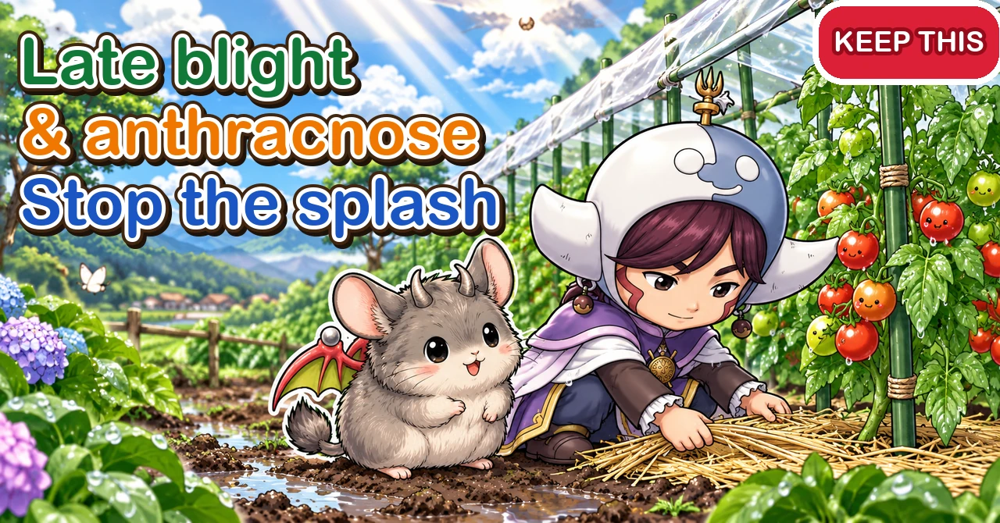

Late blight and anthracnose 🍃 The rainy-season guide

🍃 “After days of rain, watery spots appeared on the lower tomato leaves and spread upwards.”
🍃 “The edge of my watermelon leaf went black, then became rough and tore.”
🍃 “A pepper fruit has a dark ring and is turning soft in the middle.”
Hello, I'm Eiko. Eight years of growing vegetables organically and without pesticides, and a teaching licence in science.
Late blight and anthracnose are fungal diseases that favour wet leaves, rain and soil splash. Once a spot appears, that tissue will not return to health, but quick removal and a drier, cleaner growing environment can slow the spread. This guide covers identification, emergency care, prevention, crop-specific points and end-of-season clean-up.
Where you are: the rainy-season timings here are for a home garden in central Japan, including the June–July rainy season. Shift them to your own wet season. “Late blight” here means the rain-loving disease commonly seen on tomatoes and potatoes.
The essentials: both diseases travel with water and mud rather than floating long distances through dry air. Cover bare soil with mulch or straw, keep air moving, make cuts only on a dry morning, avoid excess nitrogen and remove spotted leaves and fruit before rain spreads them.
① Late blight and anthracnose at a glance
Late blight
- Cause: a fungus-like disease organism.
- Main crops: tomatoes and potatoes, with peppers and related crops also affected.
- Favoured weather: the rainy season, frequent rain and high humidity.
- Signs: small, water-soaked grey-green spots begin on lower leaves, turn dark or brown and move up the plant. Fruit can become brown and firm-rotten.
- Spread: rain splash and wounds made while pruning; it can move very quickly.
Anthracnose
- Cause: a fungus.
- Main crops: watermelons, cucumbers, melons and other cucurbits, plus peppers and strawberries.
- Favoured weather: a wet rainy season.
- Signs: leaf edges turn black, round spots develop and the centre dies out into holes; fruit develops dark, sunken spots and rots.
- Spread: wet leaves and splashed rainwater carry it to nearby leaves and fruit.

What this diagram says （図解の文字）
- Telling late blight from anthracnose
- "Late blight (tomato and potato)" ／ "Anthracnose (watermelon, cucumber and pepper)"
- "Water-soaked spots on lower leaves" ／ "Spreads upwards at once" ／ "Fruit rots brown"
- "Leaf edges turn black" ／ "Round spots become holes" ／ "Fruit rots black"
- "Rain mud spreads the disease" ／ "Both are fungal diseases spread by rain and mud"
② Understand the two diseases
Rain carries them
Both diseases survive in soil or in diseased leaves and fruit. Raindrops and muddy splash pick up the organisms and place them on leaves, stems and fruit nearby. They are not usually clouds of disease drifting far through dry air; water and mud are the short-distance transport.
Wetness makes spread rapid
When humidity is high and leaves stay wet, infection can progress quickly. During the rainy season, repeated rain and slow drying give the disease ideal conditions. Once the wet season ends and sunny, drier weather arrives, the rate of spread often slows markedly.
Wounds are entry points
Fresh cuts from removing side shoots or lower leaves, stems damaged while earthing up, and leaves rubbed by wind or heavy rain all give the organism an opening. A cut made during rain or just before it may be infected before it dries, so make wounds only in a dry spell.
Weak, overfed plants are easier to infect
A plant tired by a long harvest or a sudden change from rain to sun has less resilience. Excess nitrogen creates soft, lush stems and leaves, and the dense canopy holds humidity, so a heavily fed plant can suffer more.
③ How to identify the symptoms
Tomato late blight
- Small grey-green spots that look water-soaked begin on lower leaves.
- They enlarge quickly and become dark or brown; a white mould-like growth can appear underneath.
- The disease moves from leaf to stem and then to higher leaves.
- Green fruit can develop brown, firm rot.
- In wet weather, a whole plant can be affected within days.
Potato late blight
- Dark, water-soaked spots appear on leaves and spread suddenly.
- In high humidity the whole plant may turn yellow and collapse together.
- Tubers can also be damaged.
Watermelon anthracnose
- The edge of a leaf turns black first.
- The black area becomes rough, then tears into ragged holes.
- Early in growth it often starts on lower leaves and travels towards the growing tip.
- Dark spots on fruit can rot from the spot and stop the fruit developing.
Cucumber anthracnose
- Round spots appear on leaves.
- The centre dies, a hole opens and the leaf continues to brown.
- Poor drainage makes it more likely.
Pepper fruit disease
- The side of the fruit changes to a dull, discoloured shade.
- A dark rim forms around the discolouration and the centre becomes soft and watery.
- Small fruit can turn dark too.
- Anthracnose, late blight or another fungal disease may be responsible.
Compare other diseases
- Powdery mildew: white powder on the leaf surface, often in drier weather.
- Downy mildew: angular yellow patches bounded by veins, common on cucurbits and onions.
- Bacterial wilt: the whole plant wilts suddenly while leaves remain green, without spots.
- Late blight: water-soaked spots spread after rain, especially on tomatoes and potatoes.
- Anthracnose: black edges, round spots that become holes and black spots on fruit, often on cucurbits and peppers.
If you cannot be certain, an increase in spots after rain that begins on lower leaves is enough to treat it as a rain-and-mud disease: remove affected tissue and improve prevention in the same way.

What this diagram says （図解の文字）
- What to do when disease appears
- "1 On a dry morning" ／ "2 Cut diseased leaves and fruit" ／ "3 Put them in a bag and take them outside"
- "4 Wash the scissors" ／ "5 Thin lower leaves and let air through" ／ "6 Harvest fruit early"
- "Diseased leaves and fruit will not recover. Remove them early."
④ What to do when it appears
Diseased tissue will not recover
A leaf with a spot or fruit that has started to rot cannot be restored. Left in place, it becomes a source that rain and mud carry to other leaves, fruit and neighbouring plants.
Remove it early
Cut off a spotted leaf even when the spot is small. Pick diseased fruit while it is still small rather than leaving it to spread spores. Work gently so you do not shake droplets or spores onto healthy growth.
The safe removal sequence
- Choose a dry day when leaves are dry, preferably morning, so cuts have daylight to dry.
- Cut leaves and fruit with scissors, moving them gently.
- Put every removed piece straight into a bag rather than dropping it on the bed.
- Tie the bag and dispose of it outside the garden; do not add it to compost.
- Wash the scissors before using them on a healthy plant.
Do not spread it with tools
Scissors that cut a diseased leaf or fruit can carry the organism to a healthy harvest. Do diseased work last, then wash the scissors and your hands before you handle healthy plants.
Open the base of the plant
Remove lower leaves to improve air movement around the stem. Leaves near soil receive the most mud splash and are common entry points. On tomatoes, one approach is to remove every leaf below the lowest truss carrying fruit. On peppers, lower leaves up to about 30 cm from the soil can be removed without harming growth; this is sometimes recommended as a way to open the base.
Harvest early
When a plant is diseased or more rain is forecast, harvest fruit early. This lightens the plant and prevents more fruit from becoming a source of disease.
When to remove the whole plant
If disease has reached nearly every leaf, remove the whole plant and dispose of it outside the garden. If healthy leaves remain at the top and the wet season is nearly over, you can remove diseased tissue and watch it. Several sunny, less humid days slow spread.
Using a product
Preventive disease products are available. If you use one, follow the label for the crop, timing, number of applications and dilution. A spray cannot overcome mud splash, poor airflow or wet leaves, so fix the growing conditions first.
⑤ Prevention basics
1. Stop soil splash
Mud thrown up by rain is one of the main entrances. Cover the bed with plastic mulch and place straw around the stem so soil is not bare. Even a mulched bed has bare soil around each planting hole, so tuck straw into that gap. If you use no plastic, straw becomes particularly important.
2. Prune on a dry morning
Remove tomato side shoots on a dry day, preferably morning, so the cut heals in daylight. During the rainy season, wait rather than rushing to prune in rain. A side shoot that grows a little longer is safer than a wet cut that never dries.
3. Do not overdo nitrogen
Late blight is said to spread more readily when nitrogen is excessive. One way to grow tomatoes is to start with almost no nitrogen and wait until after the rainy season for the first side dressing. The usual timing is when the first truss starts swelling, which can coincide with wet weather. If the plant is already vigorous, wait until the rainy season ends; if it is weak, do not force the wait—give a little feed at a time. Keep the base dressing modest.
4. Keep air moving
Thin side shoots and crowded vines, remove lower leaves and let air reach the stem. For sprawling watermelons, train the vines in one direction so leaves do not pile on top of each other.
5. Keep rain off
A clear plastic roof over tomatoes blocks direct rain from leaves and fruit and reduces mud splash. A roof is enough: leave the sides open for airflow.
6. Improve drainage
Wet ground holds humidity. Make a higher bed and cut channels in the paths so water runs away after rain instead of pooling.
7. Choose more tolerant varieties
Medium and cherry tomatoes tend to tolerate late blight better than large-fruited tomatoes. If you want to grow without fungicide, choosing a medium or cherry type is one option.
8. Remember the previous crop
Home beds often grow several crops in succession, leaving unused feed behind. If the previous crop was heavily fed and the new tomato becomes unexpectedly lush, reduce or omit the base dressing.

What this diagram says （図解の文字）
- Basic prevention against soil splash
- "1 Mulch and straw" ／ "2 Prune on a dry day" ／ "3 Hold back side dressing until after the rainy season"
- "4 Rain cover" ／ "5 Cut small lower leaves from watermelon" ／ "6 Improve drainage"
- "Do not leave soil bare; make cuts on a dry day; do not crowd the plants"
⑥ Using mulch and straw
Lay plastic mulch before planting
Lay polythene mulch after shaping the bed and before planting. If the soil is moist when you cover it, that moisture stays underneath. After making the planting holes, cover the exposed soil around them with straw as well.
Lay straw before the rainy season
Spread straw before the first rain. If you wait until mud is already splashing, the first infections may have started. Cover the bed until little soil is visible. Dried grass can substitute when straw is unavailable.
Tuck it around the stem
Rain can splash through the planting hole in plastic mulch. Push a little straw into the gap around the stem so lower leaves stay cleaner. Do not pack straw tightly against the stem; leave a small air gap so humidity does not collect.
Know when to discard it
By the end of summer straw is often partly broken down and can be mixed into the soil as organic matter. Straw around a diseased plant may carry the organism, however, so remove it from the garden rather than returning it to the soil.
⑦ Making a rain cover
A roof alone works
Put stakes on both sides of the tomato row, join them across the top and fasten clear polythene over the frame with string or clips. Leave the sides open so air can move. A sealed shelter traps humidity and can make disease worse.
Watch soil moisture and wind
A roof keeps rain from the plant, but it also keeps rain from the root zone. Water at the base when the soil becomes dry. Anchor the stakes firmly and fasten the film against wind; remove it before a typhoon or other strong storm.
⑧ Calming an over-lush tomato
Recognise the sign
Very dark leaves that curl inward or ripple, together with an over-thick stem, suggest too much nitrogen. Such a soft, crowded plant is more vulnerable to late blight.
Let the soil dry a little
Reducing water uptake can reduce nitrogen uptake. In the rainy season, rain may keep the soil wet even when you do not water, so use mulch to limit rain entering the planting hole and use a roof. When growth is extremely strong, some growers also close the soil around the planting hole so less rain reaches it.
Remove lower leaves
Cut all leaves below the lowest fruiting truss. This opens airflow, removes leaves that catch mud splash and helps calm the plant at the same time as it prevents late blight.
Let a side shoot grow briefly
Normally side shoots are removed while small. When the plant is excessively strong, letting one grow a little longer can absorb some feed; removing it afterwards also gives the plant a small check. Still make the cut on a dry morning.
⑨ Crop-specific notes
Tomatoes
Late blight is one of the most frequent and damaging tomato diseases. A large-fruited tomato grown outdoors without spray may finish at around the third truss from the bottom. Mulch and straw, dry-morning pruning, restrained feed until after the rainy season and a rain roof form the basic protection. Once the wet season ends, late blight pressure falls, but fruit-eating insects increase, so inspect fruit.
Medium and cherry tomatoes
Medium types are more substantial to eat than cherries and often more tolerant than large tomatoes. Some growers report almost no late blight on medium tomatoes even without a roof. If large tomatoes repeatedly finish early, trying a medium type once is a reasonable option.
Tomatoes near the end of the crop
As the plant becomes tired from carrying fruit, sudden changes between rain and sun make disease more likely. Crowded lower leaves and splash from bare soil add to it. Cut lower leaves and keep straw around the base.
Potatoes
Late blight is especially severe in potatoes, and is favoured by poor drainage and excess feed. Potatoes prefer relatively dry soil and need little fertiliser, so dig deeply before planting and prepare a draining bed rather than adding heavy feed. Do not side dress later merely because tubers look small; a sudden push of growth can invite disease before harvest. Earth up on a dry day without injuring stems.
Watermelons
Anthracnose often starts on the lower leaves early in growth. Seedlings retain the first small cotyledons and early leaves at the base; grafted plants also have a large rootstock cotyledon. Once true leaves are well developed, some growers remove these lower leaves, taking care not to cut true leaves, because they are common first targets.
Ventilate a tunnel: closing it completely at night traps humidity. Except on frost-cold nights, leave the skirt slightly open; once minimum temperatures are high enough, leave both sides open. During the rainy season train vines in one direction, remove extra side shoots and cut diseased leaves as soon as they appear.
Watermelon tunnel ventilation
Use night temperatures as a guide. Close the skirt to the ground on frost-cold nights. When the minimum is about 8°C or higher, leave a 10–20 cm opening. Once the minimum is at least 10°C every day, open the opposite side too and keep both sides open. Even opening the near side lets air through.
Removing the first watermelon leaves
When about five true leaves have formed, identify the large rootstock cotyledon on a grafted seedling, the watermelon cotyledon above it and the first small leaf above that. Cut each at the base, one at a time, with clean scissors; hand removal is possible, but scissors make a neat cut. Do not cut true leaves. Removing the large rootstock cotyledon may feel risky, but it is said to reduce early anthracnose.
Cucumbers and melons
Round spots that become holes are typical of cucumber anthracnose, especially in poorly drained beds. Raise the bed, use straw to stop mud splash and remove old or dying lower leaves early. Melons benefit from the same clean, airy conditions.
Peppers
Fruit disease often appears in late summer when the plant is tired, especially after a heavy shower. Pick diseased fruit immediately, remove lower leaves up to about 30 cm, and harvest sound fruit early to reduce the load.
Strawberries
Strawberry anthracnose can spread when rain hits young plants in summer. Grow them under cover from direct rain when possible, and water quietly at the base so muddy droplets do not reach the crown.
⑩ Rainy-season rounds
Use every clear spell to check the plants:
- Look for water-soaked or black spots on lower leaves.
- Look underneath for a white, mould-like growth.
- Check whether leaf edges are turning black.
- Look for dark, sunken spots on fruit.
- Check that mulch or straw covers the soil and that mud is not splashing onto leaves.
- Check whether side shoots and leaves are blocking airflow at the base.
- Make sure water is not pooling on beds or paths.
After rain, look especially at lower leaves. If you find even one spotted leaf, remove it that day while the weather is dry.
⑪ Three habits that help both diseases
The crops and symptoms differ, but the routes of spread are similar, so the prevention habits overlap.
- Do not leave soil bare: cover the bed with mulch and straw so less muddy splash reaches the plant.
- Make wounds on a dry day: do pruning, lower-leaf removal and earthing up together on a dry morning.
- Do not crowd the plant: tidy side shoots, vines and lower leaves, and avoid excess feed so the base stays airy.
Starting these three habits before the rainy season makes it easier to keep damage small even in a wet year.
⑫ End-of-season clean-up
Remove the roots too
When the crop ends, dig out diseased plants as fully as possible, including roots. Gather fallen leaves and fruit. The organisms can survive in this debris and become next year’s source of splash-borne infection.
Do not compost diseased debris
Bag it and dispose of it outside the garden. If it survives in a compost heap, spreading that compost can return the disease to the bed.
Wash supports and string
Stakes, string and clips used on diseased plants can carry the organism. Wash stakes with water and dry them; discard damaged string. Clean everything before using it again.
Rotate plant families
Do not follow a diseased crop with the same plant family in the same place. After late blight in tomatoes or potatoes, choose something outside the aubergine family. After anthracnose in watermelon or cucumber, choose something outside the cucurbit family.
⑬ Through the season (central Japan)
- March–April: plant potatoes with modest feed and make a well-drained bed.
- April–May: plant tomatoes, watermelons, cucumbers and peppers; lay mulch and remember tunnel ventilation.
- May–June: spread straw before the rainy season, tidy lower leaves and remove watermelon’s small lower leaves.
- June–July: prune only on a dry morning, hold back side dressing and remove spots immediately.
- July–August: restart tomato side dressing after the rainy season; watch pepper fruit disease in late summer.
⑭ Where advice differs
Should side shoots be removed at once?
The usual advice is to remove them while small. In rainy weather, waiting for a dry morning is safer than making a wet wound in a hurry. Both approaches aim to let the cut dry quickly; weather should decide the exact day.
Can shell lime be dusted onto leaves?
Some guidance suggests a thin dusting of shell-derived lime on watermelon leaves for anthracnose prevention. Its action is mild, while stronger lime can damage foliage. If you try it, use shell lime, test a few leaves first and expand only if they remain sound.
⑮ Common mistakes
Pruning in the rain
A cut that stays wet gives disease an easy entry. Wait for a dry morning.
Heavy feeding during the rainy season
Excess nitrogen makes soft, crowded growth and can increase late blight. If the plant is vigorous, wait until the wet season ends.
Leaving diseased leaves on the bed
Rain can splash the organism back onto healthy leaves. Bag diseased pieces and remove them from the garden.
Continuing harvest with dirty scissors
Scissors can carry disease to healthy fruit. Do diseased work last and wash the blades.
Closing a tunnel every night
Trapped humidity favours anthracnose. Except on frost-cold nights, leave the skirt slightly open.
Assuming mulch makes straw unnecessary
Soil around the planting hole is still exposed and can splash. Tuck straw around the stem.
⑯ Questions
Can I eat fruit from a diseased plant?
Some guidance says that sound flesh can be eaten after cutting away a large affected area, but disease keeps advancing while fruit remains on the plant. Pick it early and do not leave it as a source near healthy fruit.
Can I plant tomatoes in the same place next year?
Organisms may remain in leaf and fruit fragments or soil. Clear roots and debris and avoid following tomatoes or potatoes with the same family where possible.
Scissors or fingers for side shoots?
Small shoots can be pinched by hand. If you use scissors, wipe the blades between plants. In either case, work on a dry morning so the wound dries quickly.
Can tomatoes and potatoes grow near each other?
Both are vulnerable to late blight, so disease can move between them. Separate them if you can.
What if it rains every day?
Use every dry interval when leaves have dried to remove diseased tissue. A rain roof used during the wet spell can greatly reduce further damage.
My watermelon fruit has black spots
It may be anthracnose. Pick and dispose of the fruit early, then protect other fruit from soil splash with straw or a mat.
Can I harvest in the rain?
Harvest ripe fruit rather than leaving it to split or spoil, but remember that wet plants spread disease easily. Do not touch healthy plants after a diseased one, wipe scissors between plants and leave pruning for a dry day.
Only my green tomatoes are turning brown and firm
Late blight may have reached the fruit. Remove it and check the same plant’s leaves and stems for spots.
I have no straw
Dry cut grass for several days and use it as a substitute. Plastic mulch alone cuts splash substantially; tuck dried grass into the gap around each stem.
Is the garden safe after the rainy season?
Lower humidity slows spread, but late-summer showers and typhoons can start it again. Leave straw in place, keep checking leaves and fruit and remove spots promptly.
I removed almost all the leaves
If healthy new leaves remain at the top, the plant may recover. Removing diseased leaves is safer than leaving a source of spread, and several sunny days can help new leaves develop.
Can container plants get these diseases?
Yes, but containers can be moved under an eave during long rain. Water quietly at the base so soil does not splash onto the plant.
🔬 The science: rain, wounds and disease
Why mud splash spreads it: organisms survive in soil and fallen diseased fragments. A raindrop hitting bare ground makes a small spray of mud that carries them onto the lowest leaves and fruit. Covering soil with mulch or straw reduces that spray.
Why wet leaves are vulnerable: on a wet surface, the organism can germinate and enter the leaf. The longer leaves stay wet, the more opportunities it has. Airflow helps leaves dry sooner.
Why excess nitrogen increases risk: nitrogen makes soft, juicy leaves and stems. They are easier to enter, and their dense growth traps humidity. Restrained feed produces firmer growth with better airflow.
Why symptoms begin low down: muddy droplets reach the lowest leaves first. Watermelon cotyledons and other small lower leaves, along with tomato and pepper lower leaves, are the first receiving surfaces. Removing them removes an early landing place.
Why the wet season ending helps: infection needs water on the leaf surface. Sunny weather dries leaves sooner and lowers humidity, so there are fewer chances to enter. The plant can grow new leaves while spread slows.
To sum up
- ✅ Late blight and anthracnose are rain- and mud-spread fungal diseases, common in the rainy season.
- ✅ Late blight is common on tomatoes and potatoes; anthracnose is common on cucurbits and peppers.
- ✅ Diseased leaves and fruit will not recover. Remove them on a dry morning, bag them outside the garden and wash scissors.
- ✅ Prevent splash with mulch and straw, prune on dry mornings, keep nitrogen modest, improve airflow and use a roof over tomatoes.
- ✅ Ventilate watermelon tunnels, remove vulnerable lower leaves carefully and keep beds well drained.
- ✅ Drier weather after the rainy season slows spread, but keep checking after heavy summer showers.
Thank you for reading all the way to the end! Before the rainy season starts, put a handful of straw around each plant. That small step keeps mud off the leaves and gives your crops a better chance in wet weather ☔
Thank you for reading!